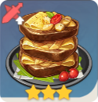

Diluc
- ................. 5 stars
- .................. Pyro
- .................... DPS
Compétences offensives
Attaque Épée trempée
|
Attaque normale : Enchaîne jusqu'à 4 coups d'épée. Attaque chargée : Succession d'entailles circulaires qui se termine sur un coup puissant. Combo : 89,7% / 87,6% / 98,8% / 134% |
Skill Assaut brûlant
|
Inflige des DGT Pyro d'un coup de longue épée. Peut être exécutée 3 fois d'affilée. DGT compétence : 94,4% / 97,6% / 129% TdR : 10s |
Burst Aurore |
Provoque une explosion de flammes qui repousse les ennemis, avant de converger sur son épée, pour renaître en un phénix qui inflige d'importants DGT Pyro aux ennemis sur sa route. DGT Explosion : 204% |
Compétences passives
Passif #1 Impitoyable |
Les attaques chargées de Diluc consomment 50% d'endurance en moins, et durent 3s de plus. |
Passif #2 Bénédiction du phénix |
Prolonge l'enchantement Pyro d'Aurore de 4s. Diluc inflige 20% de DGT Pyro supplémentaires pendant la durée de cet effet. |
Passif #3 Légende de l'aurore |
Lorsque vous forgez une épée à deux mains, 15% du minerai utilisé vous sera rendu. |
Constellations
Constellation #1 Conviction |
Diluc inflige 15% de DGT supplémentaires aux ennemis ayant plus de 50% de leurs PV. |
Constellation #2 Chaleur des cendres |
L'ATQ de base de Diluc augmente de 10% et sa VIT d'attaque de 5% lorsqu'il subit des DGT. 3 cumuls max. Cet effet peut être déclenché une fois toutes les 1,5s. |
Constellation #3 Feu et acier |
Niveau de compétence Assaut Brûlant +3. Niveau max : 15 |
Constellation #4 Flamme courante |
Exécuter Assaut brûlant en rythme augmente considérablement les DGT infligés. L'Assaut brûlant suivant un premier Assaut brûlant inflige 40% de DGT supplémentaires pendant 2s lorsqu'il est exécuté dans les 2s. |
Constellation #5 Phénix, Messager de l'Aube |
Niveau de compétence Aurore +3. Niveau max : 15 |
Constellation #6 L'épée des flammes brise-nuit |
La VIT des 2 attaques normales suivant Assaut brûlant augmente de 30% ; ces attaques infligent de plus 30% de DGT supplémentaires. Assaut brûlant ne réinitialise plus les enchaînements d'attaques normales. |
Build

Recette secrète
|  | Ingrédients : 3 Viande crue | 3 Pomme de terre | 1 Fromage | 1 Herbe à lampe Effet : Augmente le taux de CRIT et les DGT CRIT de tous les personnages de l'équipe de 20% pendant 300s. Ne s'applique qu'a votre personnage en mode multijoueur. |